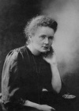

Nobel ödülü kazanan ilk kadın olan Fransız kimyager Marie Curie (1867–1934) radyasyonun sırlarının keşfedilmesini ve iki yeni elementin tanımlanmasını sağlamış, bir ilke imza atarak erkeklerin hakimi olduğu fizik ve kimya dünyasına girmeyi başarmıştır. Curie iki ayrı dalda Nobel kazanan tek kişidir. Bu durum onun bilim tarihindeki rakipsiz konumunu ortaya koymaktadır.

Curie Polonya’nın Varşova şehrinde dünyaya geldi. Asıl adı Maria Sklodowska’ydı. 1891 yılında Fransa’ya göç etti. Sorbonne’da fizik okudu. 1894 yılında fizikçi Pierre Curie (1859-1906) ile tanıştı. Ertesi yıl evlendiler. Kadın olduğu için memleketinde hocalık yapamayan Marie, Pierre’le evlendikten sonra Fransız vatandaşlığına geçti.
Çift sonraki on yılını ya laboratuarda çalışarak ya da Fransa kırsalında yaptıkları bisiklet turları ile geçirdi. Yeni keşfedilen ve isimlerini kendilerinin koyduğu radyoaktivite ile ilgili çalışmaları sayesinde 1903 yılında fizik dalında Nobel aldılar. Marie aynı yıl Fransız tarihinde doktor unvanı alan ilk kadın oldu.
1906 yılında Curieler büyük bir trajedi yaşadılar. Pierre bir kaza sırasında öldü. Eşinin ölümü Marie’yi yıkmıştı. Kendini tamamen laboratuar çalışmalarına verdi. 1911 yılında bir Nobel ödülü daha kazandı. Bu sefer kimya dalında ödül almıştı.
Curie ancak bir gram üretebildiği radyumu I. Dünya Savaşı sırasında gizlice Paris dışına çıkarmak zorunda kaldı. Diğer taraftan savaş ona radyasyonun pratikte nasıl kullanılabileceğini gösteren güzel bir fırsat sundu: Röntgen makinası. Ambulansların tepesine yüklenerek cephelere gönderilen bu alet doktorların yaralıların vücutlarındaki kurşun ve şarapnel parçalarını bulmasına yardımcı oluyordu. Bu sayede yüzlerce hayat kurtarıldı.
1920’ler boyunca Curie’nin ünü sürekli arttı. Avrupa ve ABD’de dolaşıyor ve her gittiği yerde ödüller alıyordu. 1921 yılında başkan Warren G. Harding (1865–1923) ona ABD kadınları adına bir gram radyum verdi. Ömür boyu radyasyona maruz kalması etkilerini sonunda üzerinde göstermeye başladı. Aplastik anemi olmuştu. Bu ağır bir kemik iliği hastalığıydı. 1934 yılında öldü.
Ek Bilgiler
1- Curie, aldığı iki Nobel ödülünü I. Dünya Savaşı sırasında Fransız hükümetine vermek istedi. Altın ve gümüşe çok ihtiyaç duyan yetkililer yine de bu yardımı reddettiler.
2- Curie, radyumu ve memleketi Polonya’dan yola çıkarak bu ismi verdiği polonyum elementlerini bulmuştur.